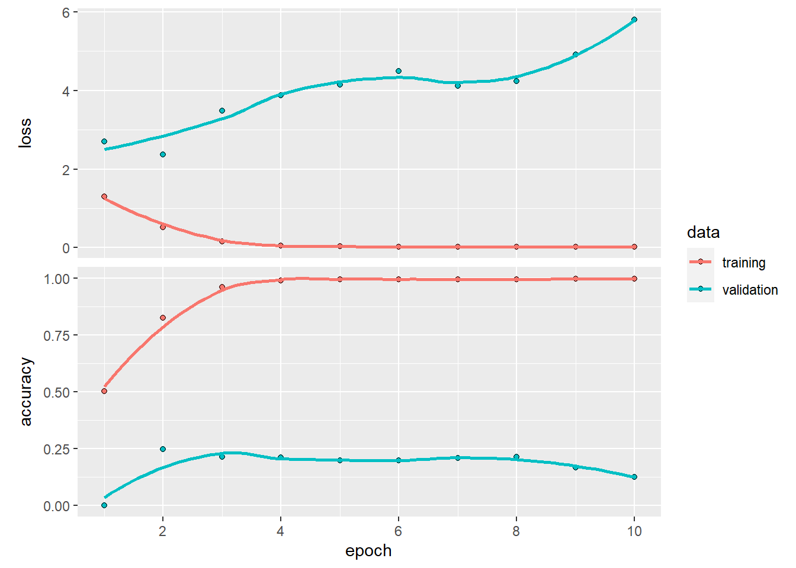

SNGKEL002.github.io
Abstract
The State of the Nation Address (SONA) is a ceremonial event, during which the sitting president delivers a speech providing insight into the nations socio-economic, political and developmental standings at that time. This assignment leverages natural language processing and predictive modelling to apply on a dataset of SONA speeches from the years 1994-2022. The primary aim of this project was to construct predictive models to determine the source of a given sentence within a SONA speech to identify which president had made the statement and evaluating the performance. A myriad of skills were required for this task, specifically text data preprocessing and cleaning, dataset splitting, predictive modelling and critical analysis. Additionally, part of the objective was to successfully host this project on a GitHub website and a well-managed GitHub repository.
Introduction
The state of the nation address (SONA), commonly referred to as the ‘Opening of Parliament’ is an annual event wherein the president delivers a speech summarizing the political landscape for the current and upcoming year. The SONA touches on a wide range of themes ranging from socio-economic issues to political endeavors, this provides a snapshot of a nation’s aspirations, difficulties, triumphs, and current events. South Africa has experienced substantial socio-economic transitions, had to navigate many novel and historic challenges, and undertake developments for improvement over the past 3 decades, as a result, different leaders have had to adapt their approaches to the issues at hand.
It is inferred from the sentiment analysis and topic modelling that different presidents had explored similar themes and interests, however the tone of their delivery and the nature they related this was more discrete. Additionally, each president brought their own promises and visions for the country and they narrowed in on these specifically. This causes some amount of variability in the SONA data, which can be leveraged to perform predictive tasks.
In this assignment we aim to predict the source of sentences mentioned in a SONA meeting.
In addition to the main aim, this assignment has a range of objectives, one of them is data cleaning and extensive preprocessing to ensure there is good quality data to perform downstream analysis. Extensive data preprocessing was especially required to fulfil the aim of the usage of multiple methods of feature extraction, this may mean bag-of-words (BoW), term document-inverse document frequency (TF-IDF) and use of top n number of words appearing in a corpus. In this project, we aimed to explore a range of predictive models and evaluate their performance on the dataset and comparatively criticize over multiple measures and types to get experience in learning models for text data. Lastly, we aimed to leverage the use of GitHub as a version control tool and present the data in the form of a GitHub webpage to prepare us for practical data science tasks.
Since the dataset was large, and it is expected for most presidents to be concerned about a shared range of interests and explore common themes. This results in a large part of the speech data contributing less variation to the dataset making it more challenging to find meaningful or informative discriminatory factors. To overcome this, a range of feature selection for natural language processing will be explored in an effort to extract the most important words offering the most amount of variation to the dataset.
It is then incorporated into a range of predictive models. This project only makes use of supervised learning techniques to make inferences on sentence sources. This could range from classification trees and multinomial logistic regression to more complex models such as neural networks (NN). This type of analysis is useful for uncovering hidden patterns in a collection of text, and offering deep insights into what nuances make one president differ from the next. In this project we focus on NN, there are many variants of this supervised learning technique, and evaluation of which techniques work well on the SONA dataset offers insights into the way in which text data should be handled.
Lastly, GitHub is utilized to perform version control on the code and write-up, it has proven itself to be a highly versatile and useful tool for practical data science tasks.
Application Areas and Literature Review
Application Areas of Predictive Modelling in Natural Language Processing
The phrase “machine learning” has gained a substantial amount of popularity lately, propagated by the advent of machine learning models and artificial intelligence tools such as ChatGPT becoming more available and streamlined for the average person to use. The versatility and adaptability of these models, specifically when applied to NLP, render it an almost essential skill to be equipped with as a data scientist. Applications of these kinds of models extend far beyond merely being able to accurately predict an outcome through a given set of features, it can be adapted and manipulated to provide translational contributions to the fields of marketing, health care, finance, education and many more. The following literature review will explore the established application areas as reported by researchers.
Due to the unpredictability of stock markets, models used for prediction of stock price are highly valued as a supplementary decision making tool for investors. However, there are many theories set forward by researchers and domain experts who discredit the accuracy of these models. Fama (1965)1 introduced the efficient market hypothesis, which implies that there cannot be an efficient system to predict stock price variability as the only information that could possibly be used is in the current stock price itself. Malkiel (1985)2 posits that the stock price pattern can be parallelled to that of a random walk and cannot be predicted better than chance. However, Fortuny et al. (2014)3 employed a number of text-mining techniques including BoW to build multiple stock price forecasting models based on sources like news data, sentiment analysis and technical indicators. While the authors were successful in proving that stock price can be predicted better than chance, they still caution use of single models in decision making, and rather advise investors and researchers to implement a multi-model approach.
The paper by Fortuny et al. (2014)3 relied heavily on data from public opinion, similarly, the same kind of data is relevant in marketing environments. Xiao et al. (2023)4 explores the phenomenon of a user-driven marketing campaigns, wherein a key-user and their reviews encourage a chain reaction of engagement from potential participants. Xiao et al. Evaluate issues and advantages of using recurrent neural networks(RNN) in the forecasting of market campaign trajectory. These issues arise due to the vast amounts of connections between users but a weak correlation as a result, however the authors stress that network reduction is a key factor in developing a solution to these issues.
In line with use of reviews for forecasting based on user reviews, Araujo et al. (2022)5, described using BoW and Neural Language Models (NLM) to perform sentiment analysis and utility task (customer service, automated content generation) prediction for requirements engineering, from a dataset of application reviews. NLM models performed superior as they have the complexity to understand and perform better at human semantic processing.
Although text-mining and NLP methods are usually directed towards the finance and marketing bubble, its use in health sciences are growing exponentially. Marafino et al. (2018)6 direct their focus on expanding the current clinical prediction features traditionally used. Due to the limited availability of data in intensive care units (ICU), the authors set out to explore the validity of using NLP techniques and free-text clinical notes to offer some predictive value to mortality of patients. The authors employed a sublinear form of term frequency and a logistic regression model with L2 regularization to validate the use of clinical free-text notes in the healthcare setting.
Text- mining and NLP provide a valuable statistical tool for forecasting and decision- making, however, it is necessary to note that one cannot rely on a single model prediction when using outcomes for further tasks. An aggregate model-based approach should always be followed to gain consensus on the information needed to move forward.
Data
The SONA dataset is a collection of speeches presented by 6 presidents spanning from May 1994 to February 2023. The dataset consists of speeches made by presidents F.W de Klerk, Nelson Mandela, Thabo Mbeki, Kgalema Motlanthe and the current president, Cyril Ramaphosa. The SONA is an annual event, held bi-annually in years which elections take place. Figure 1 shows which years elections were held in South Africa, this provides insights into the terms each president has served and the distributions of their speeches.
Figure 1: Barplot Showing the Number of Speeches Given Per Year.
The length of the total speeches that were given by a president is greatly affected by the length of the time they served. Observing Figure 2 below, the disproportionate length of the speeches given by presidents de Klerk and Motlanthe specifically should stand out. De Klerk and Motlanthe both had only delivered one speech each.

Figure 2: Barplot Showing the Number of Speeches Given By Each President.
Additionally, Figure 3 highlights the length of each speech, showing a few notable observations about a presidents tendancy to deliver longer or shorter speeches. We see that Mandela and Zuma tend to give more consistently shorter speeches. While Mbeki and Ramaphosa gave more consistently longer speeches. Ramaphosa’s longest speech was in 2023, which was his first year as president. This could be attributed to the fact that he was elected in February 2023, and therefore had a lot to say.

Figure 3: Barplot Showing the Speech Length of Each Speech.
Data Pre-processing
Extensive preprocessing was conducted on the SONA dataset to ensure accurate results in the predictive modelling section. General cleaning of the data was conducted by correcting the parsing of dates to a standardized format. Regular expressions and non-character variables were removed, dates in the start of the speech were removed to prevent these symbols from interfering with downstream processing.
Once data was sufficiently cleaned, it was decided to remove de Klerk and Motlanthe’s speeches from the SONA dataset, this is done as there would not be a proportionate amount of data that could be used to create an accurate prediction for these two presidents, additionally, leaving these observations in the dataset may affect the integrity of the predictive models generated. This also limits the potential issues these underrepresented classes could have on our computational efficiency.
While it was noted that the data was still imbalanced after removal of these classes, we had not balanced the SONA dataset further. Attempting to balance the data further using caret(), resulted in errors related to the type of data input when running the neural network models which could not be resolved.
Implementation/Methods
Feature Engineering
Bag-of-Words (BoW)
The cleaned dataset was tokenized by sentence first, and a unique identifier for each sentence was added to the rows, additionally stop words were excluded from the data. A word bag was generated using the input as the sentences and the tokens as words, and extracting the 200 most frequently occurring words for further processing. Next, individual words were extracted from sentences and combined to the word frequency data from the word bag. The processed data was then formatted into a BoW format such that each row represented a sentence and each word had a frequency.
Term Document- Inverse Document Frequency
Total documents were found using the unique identifier for each sentence. The IDF scores were computed and the IDF score for each word was derived from calculating the log of the ratio between number of documents with that word. The TF-IDF scores for each word within a document was calculated to extrapolate the importance of each word in a sentence.
Word Embedding
A large word vocabulary was generated by employing a text tokenizer with a limitation of 2000 unique words. The tokenizer was trained on sentence tokens from data extracted from the presidential speeches from this, the text sequences were numerically encoded. To standardize the sequence length, a frequency plot of the sentence length was plotted to evaluate the lengths of sequences in the dataset, illustrated in figure 4 in appendix A. The maximum sequence length of 40 was set. Sequences were then padded to conform the sequences to be lengths of 40.
Train and Test Set
Bag-of-Words
The BoW data was split into a training set by taking a stratified random sample of 70% of the data. The remaining 30% of the data was designated to the test set. Next, the input features and target variables were processed by extracting the input features and the target from each respective split. Downstream it was noted that inputs for the neural network models had to me of type float. We subsequently numerically encoded the four targets (Mandela, Bheki, Zuma and Ramaphosa), and converted them to a one-hot encoded matrix to meet the requirements of the NN algorithms.
Term Frequency –Inverse Document Frequency
The train and test set split, feature extraction and target processing into one-hot encoded matrices followed the same method as outlined above (BoW Train and Test split).
Word Embedding
The train and test set split, feature extraction and target processing into one-hot encoded matrices followed the same method as outlined above (BoW Train and Test split).
Predictive Models
BoW – Feed-Forward Neural Network
A multilayer perceptron NN was constructed using Keras. The model architecture consisted of a 32 unit, rectified linear unit(ReLU) activation and input shape corresponding to the training data columns. A hidden layer of 32 units, ReLU activation and an L2 regularization with a penalty of 0.01 was added. Finally an output layer was used with 4 units to correspond to each of the 4 categories, along with a softmax activation layer. The model was compiled using categorical-crossentrophy and an Adam optimizer with a learning rate of 0.001. The model was then trained over 10 epochs with a batch size of 5 and a 10% validation split, the resulting model was then evaluated on the test set.
TF-IDF - Feed- Forward Neural Network
The model architecture featured a ReLU activation input layer with 200 units and input shape to match training columns, 2 hidden layers with ReLU activation with 150 and 100 units were added, the 100 unit layer incorporated L2 regularization with a penalty of 0.01, and a third hidden layer with 50 units and a hyperbolic tangent (tanh) activation function. Finally, the output layer had 4 units and a softmax activation function. The model was compiled using categorical cross-entrophy as the loss function and an Adam optimizer. The model was trained over 10 epochs with a batch size of 15 and a 20% validation split, resulting model was then evaluated on the test set.
Word Embeddings – Feed- Forward Neural Network
For the embedding layer, the embedding space was set to 50 and the input length was set to 40 (the maximum sequence length). A flatten layer was added, 4 hidden layers were added, two with 32 units one of which had tanh activation and the other had ReLU activation, the third hidden layer consisted of 16 units, ReLU activation and an L2 regularization term with a penalty of 0.2. The fourth hidden layer consisted of 25 units and ReLU activation. Finally an output layer with 4 units and a softmax activation model was added. The model was compiled using categorical-crossentrophy and an Adam optimizer with a learning rate of 0.001. The model was then trained over 10 epochs with a batch size of 10 and a 10% validation split, the resulting model was then evaluated on the test set.
Word Embeddings - Convolutional Neural Network (CNN)
A CNN was constructed, with an embedding layer of 50 and input shape as number of training data columns. The convolutional layers consisted of a 1D convolutional layer with 64 filters and 8 unit kernel size and ReLU activation, a 50% dropout rate dropout layer, another 1D layer with 100 filters and 20 unit kernal size and ReLU activation, and finally a 1D max-pooling layer with a size of 2. A flatten layer was added after convolutional layers. One dense hidden layer with 32 units and ReLU activation was added with an L2 regularization and penalty of 0.2. Lastly, the output layer of 4 units and softmax activation was added.
The model was compiled using categorical-crossentrophy and an Adam optimizer with a learning rate of 0.001. The model was then trained over 10 epochs with a batch size of 15 and a 10% validation split, the resulting model was then evaluated on the test set.
Word Embeddings – Recurrent Neural Network (RNN)
An RNN was constructed with an embedding layer as described in the CNN, 2 long short-term memory (LSTM) layers were added, one with 128 units and tanh activation with a dropout rate of 0.2 and the second with 64 units, tanh activation and dropout rate of 0.2. Next two dense layers were added, one with 64 units, the second with 32 units and both with ReLU activation. Lastly, the output layer consisted of 4 units and softmax activation. The model was then compiled using categorical-crossentropy and an Adam optimizer with a learning rate of 0.001. The model was then trained over 10 epochs with a batch size of 25 and a 10% validation split, the resulting model was then evaluated on the test set.
Results

Figure 4: Plot Showing the Accuracy and Loss of The Feed Forward Neural Network Model Using Bag of Words Features .

Figure 5: Plot Showing the Accuracy and Loss of The Feed Forward Neural Network Model Using TF-IDF Features .

Figure 7: Plot Showing the Accuracy and Loss of The Feed Forward Neural Network Model Using Word Embeddings.

Figure 8: Plot Showing the Accuracy and Loss of The Convolutional Neural Network Model Using Word Embeddings.
Figure 9: Plot Showing the Accuracy and Loss of The Recurrent Neural Network Model Using Word Embeddings.
| Neural.Network.Type | Data.Type | Loss | Accuracy |
|---|---|---|---|
| Multilayer Perceptron | Bag of Words | 2.01 | 0.55 |
| Multilayer Perceptron | TFIDF | 2.78 | 0.51 |
| Multilayer Perceptron | Word Embeddings | 2.74 | 0.47 |
| Convolutional Neural Networks | Word Embeddings | 1.85 | 0.50 |
| Recurrent Neural Network | Word Embeddings | 1.40 | 0.54 |
Table 1: Table Showing Neural Network Metrics
Discussion
The project set out to implement a model to predict the source of a sentence from the SONA dataset, this was done using 3 different methods to extract the features. For all neural networks we had utilized a loss function called categorical cross entropy, also known as “Softmax cross-entrophy”. This function is designed specifically for use in multiclass classification problems in neural networks due to the dissimilarity measure it uses, it is able to quantify how accurately the predicted probability distribution it produces, fits to the real distribution. The loss function is a good indicator of overfiitting.
Table 1 presents the performance metrics for all neural network models as well as their feature extraction technique employed in the preprocessing.
The accuracy is calculated as the number of correct predictions divided by the number of total predictions, overall, the accuracy for the SONA dataset predictive models were sub-par. This may be due to having a relatively small dataset as well as a lack of variability in the dataset. The SONA involves a many common political and socio-economic themes, speakers are expected to speak on long term problems the country experiences which are common in most speeches. Additionally, common terms used to address other members of parliament and citizens are standardized and don’t offer the models much interesting data to learn. Additionally, the preprocessed data in our analysis is slightly unbalanced, ranging from 1159 sentences to 1846 sentences, this is a limitation.
Interestingly, when comparing across all models and feature engineering techniques, we note that the Bow feed-forward neural network (FFNN) boasts the highest accuracy (0.55) and lowest loss (02.01) when compared to all other FFNN’s , the second best FFNN model was the TFIDF FFNN model with 0.51 accuracy and a loss of 2.78, FFNN with word-embedding as the feature selection method performed least optimally, with accuracy of 0.47 and loss of 2.74. The TF-IDF method is usually not preferred over BoW for the classification of noisy or less informative datasets, this is because it assigns higher scores to more frequent terms across documents, making it even harder to differentiate between them while BoW is not based on frequency of terms and does not upweight frequent terms, it merely counts their occurrences. In terms of word-embedding, it is a method which considers context of the terms and groups similar meaning terms together, for the context of the SONA data this may be a disadvantage since most of the words used across all speeches are common. Additionally, the SONA sometimes incorporated words spoken in another one of the 11 official languages, this means that the word-embedding feature selection will disregard certain sentences with words which may be informative as to who the speaker is. Further, referring to figure 7, we can observe that this model is slightly overfitted, although regularization was applied it did not address this issue. These factors may explain BoW outperforming the more complex feature engineering techniques.
The accuracy and loss for the CNN model using word-embeddings was 0.50 and 1.85 respectively, the CNN is particularly useful for capturing of features at sentence level, specifically involving patterns and relationships in the data as well as semantic analysis. This may not be the most appropriate model for the SONA dataset as most sentences spoken in the speeches may be similar and share strong correlations with each other based on the features.
The Recurrent Neural Network (RNN) achieved an accuracy of 0.54 and a loss of 1.4, the lowest loss of all NN models. This model is competitive with the BoW FFNN. This is because they are well suited to handling sequences, and sentences are a very appropriate input for these models. Additionally, they “remember” sequences as they go through them and capture sequential or temporal relations, this may attribute to why they may be a good competitor since SONA speeches and their authors are captured over discrete periods of time.
Overall, with a larger and more interesting dataset, there is poten for a higher accuracy on the predictions. Balancing the data before training may have minimized bias and discrimination of some classes over others.
Conclusion
This paper outlines the exploration of different feature selection methods and predictive models in the classification of speech sources, it provides an insight into the strengths and weaknesses of the employed models, as well as their feature selection methods. The study highlights the importance of understanding your dataset well before modelling, and employing models which are optimized for the specific research problem at hand. Additionally, the difficulties and limitations of working with text data are outlined and presented. Recommendations for further studies would be to balance the dataset prior to model training, and experimenting on sub setting speeches which may be less generalized and offer more informative insights.
References
1.Fama, E.F., 1965. The behavior of stock-market prices. The journal of Business, 38(1), pp.34-105.
2.Malkiel, B.G., 1989. Efficient market hypothesis. In Finance (pp. 127-134). London: Palgrave Macmillan UK.
3.Junqué de Fortuny, E., De Smedt, T., Martens, D., & Daelemans, W. (2014). Evaluating and understanding text-based stock price prediction models. Information Processing & Management, 50(2), 426-441. https://doi.org/10.1016/j.ipm.2013.12.002.
4.Xiao, Y., Zhu, Y., He, W., & Huang, M. (2023). Influence prediction model for marketing campaigns on e-commerce platforms. Expert Systems with Applications, 211, 118575. https://doi.org/10.1016/j.eswa.2022.118575.
5.Araujo, A.F., Gôlo, M.P.S. & Marcacini, R.M. Opinion mining for app reviews: an analysis of textual representation and predictive models. Autom Softw Eng 29, 5 (2022). https://doi.org/10.1007/s10515-021-00301-1
6.Marafino BJ, Park M, Davies JM, et al. Validation of Prediction Models for Critical Care Outcomes Using Natural Language Processing of Electronic Health Record Data. JAMA Netw Open. 2018;1(8):e185097. doi:10.1001/jamanetworkopen.2018.5097